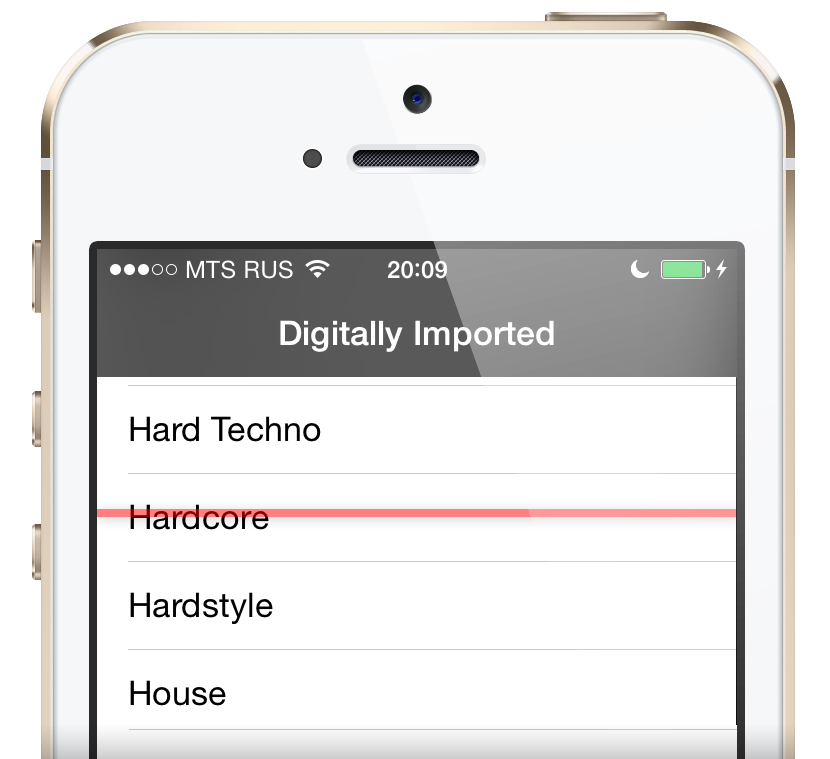

MiniRadio
alpha
Minimalistic and simple
The minimalistic interface makes it easy to use on the go, and optimized code lets you listen a lot on a single battery charge.
Now Playing integration

Digitally Imported
DI.fm is the leading internet radio station network that is a must for every radio addict.
Kioku track memory
You hear a song and you like it, but your iPhone is in your pocket, too far for you to reach right now? Just hit the Kioku button, and it will save the current track name along with a 15-second recording of it, so you can find it later.
Extremely configurable
Remap headphone keys to act the way you want, change Kioku sample length, and much more.